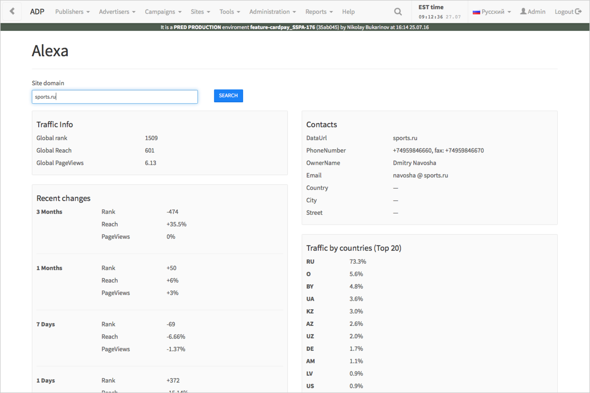
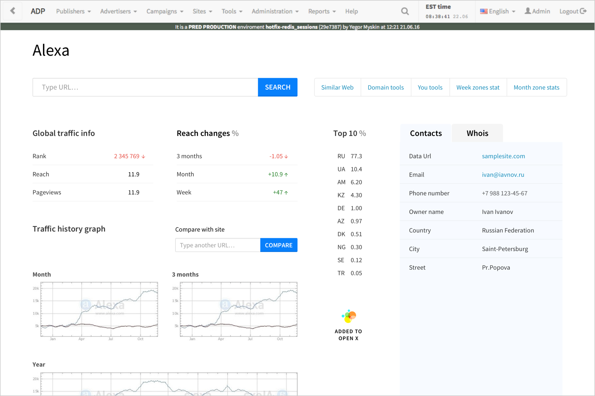
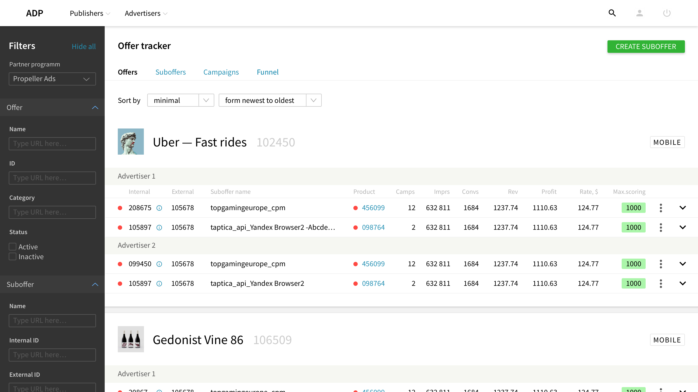
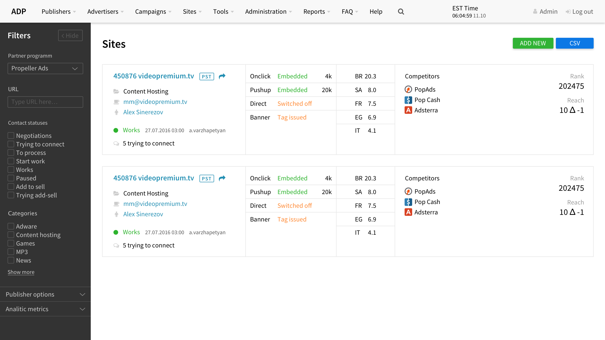
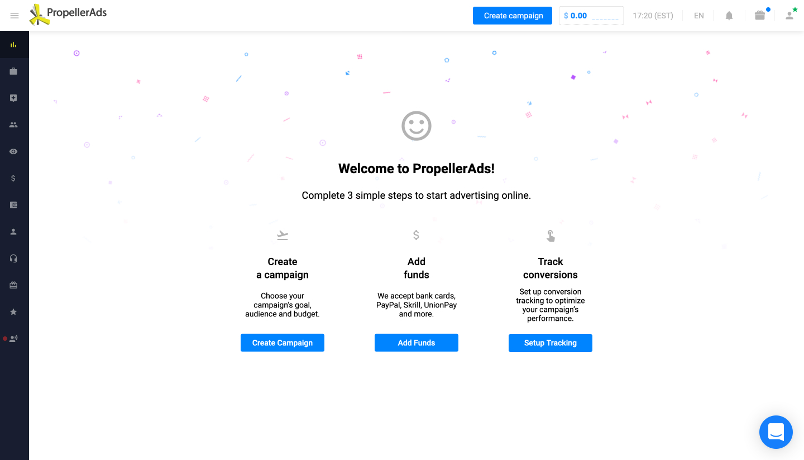
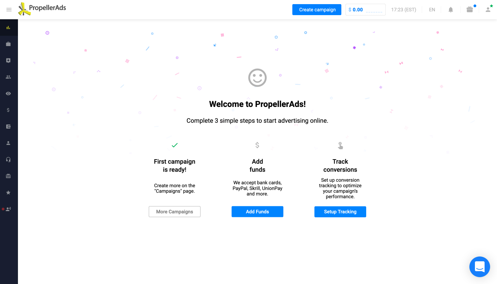
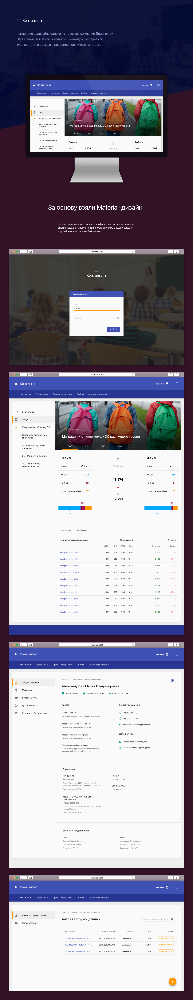
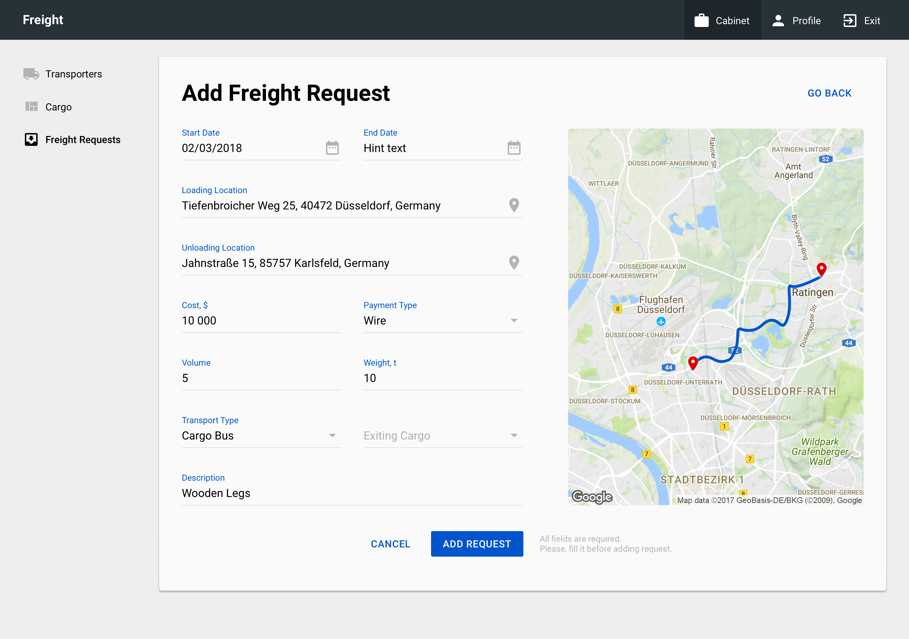
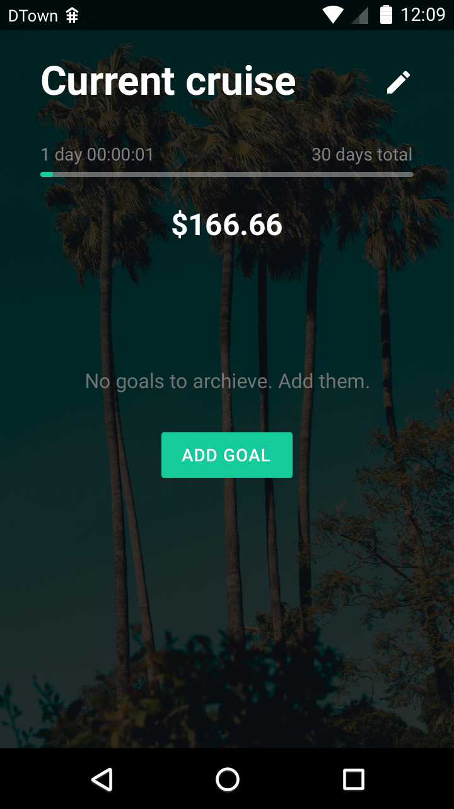
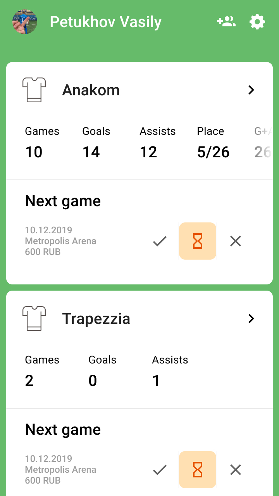

<!DOCTYPE html>
<html>
  <head>
    <meta charset="utf-8"/>
    <meta name="viewport" content="width=device-width, initial-scale=1.0"/>
    <meta property="og:type" content="article"/>
    <meta property="og:title" content="артём самсонов × продуктовый дизайнер"/>
    <meta property="og:description" content="опыт и скиллы"/>
    <meta property="og:image" content="http://soshnikov-writing.art/img/default.jpg"/>
    <link href="https://fonts.googleapis.com/icon?family=Material+Icons" rel="stylesheet"/>
    <link rel="stylesheet"/><!-- Yandex.Metrika counter --> <script type="text/javascript" > (function(m,e,t,r,i,k,a){m[i]=m[i]||function(){(m[i].a=m[i].a||[]).push(arguments)}; m[i].l=1*new Date();k=e.createElement(t),a=e.getElementsByTagName(t)[0],k.async=1,k.src=r,a.parentNode.insertBefore(k,a)}) (window, document, "script", "https://mc.yandex.ru/metrika/tag.js", "ym"); ym(57652780, "init", { clickmap:true, trackLinks:true, accurateTrackBounce:true, webvisor:true, trackHash:true }); </script> <noscript><div></div></noscript> <!-- /Yandex.Metrika counter -->
    <title>артём самсонов × продуктовый дизайнер</title>
  <link href="./css/style.bundle.css" rel="stylesheet"></head>
</html>
<body class="body_light">
  <div class="header header_light">
    <div class="header__logo"><a class="header__logo-link" href="index.html">артём самсонов</a></div>
    <div class="header__menu"><a class="header__menu-elem" href="#writing">портфолио</a><a class="header__menu-elem" href="#contacts">контакты</a></div>
  </div>
  <div class="content">
    <div class="article">
      <div class="article__text">
        <p>
          <div class="article__list">
            <h2>содержание</h2><a href="#wrike">Wrike</a><a href="#propeller">Propeller Ads (тут пара кейсов и картинки)</a><a href="#dnevnik">Дневник.ру (тут много material'а)</a><a href="#setup">Setup.ru</a><a href="#soft-skills">Дополнительно: софт-скиллы</a><a href="#better">Что могло быть лучше</a>
          </div>
        </p><span>апрель 2019 – настоящее время</span>
        <h2 id="wrike">Wrike</h2>
        <p>В Райке я тружусь в выделенной команде дизайн-системы, которая следит за компонентами, развивает их и наводит порядок в библиотечной инфраструктуре.</p>
        <ul>
          <li>я выясняю, подходят ли компоненты продуктовым командам и удобны ли они для клиентов, описываю их возможности и ограничения</li>
          <li>проверяю решения других дизайнеров на консистентность и обсуждаю с ними неочевидные кейсы</li>
          <li>совместно с разработчиками еженедельно принимаю решения, стоит ли добавлять в компонент функциональность или лучше порекомендовать командам разработать локальное решение</li>
          <li>изучаю требования по accessibility</li>
        </ul>
        <p>Помимо этого, я активно участвую в инициативах дизайн-отдела, вместе с другими дизайнерами мы улучшаем процессы взаимодействиями и боремся с общими проблемами. Я содержу графическую библиотеку Figma в чистоте и порядке, создаю в ней переиспользуемые компоненты для других дизайнеров.</p>
        <p>Нередко провожу ретроспективы в команде, иногда фасилитирую планнинги и PBR'ы. Пишу тексты командных анонсов и гайды для дизайн-отдела (преимущественно на русском).</p>
        <p id="propeller">Я уже год не занимаюсь проектированием нового функционала в продукте. Мои обязанности больше пересекаются с дизайн-менеджментом.</p><span>июнь 2016 – апрель 2019</span>
        <h2>Propeller Ads</h2>
        <p>В первый год я занимался внутренней CRM: выяснял у финансистов и менеджеров, как сделать их работу эффективнее c помощью продукта.</p>
        <p>Самой интересной задачей стал редизайн инструмента, который позволял анализировать сайты из топа Alexa и формировать список лидов. Мы две недели наблюдали за работой менеджеров со старым интерфейсом и опросили каждого из них. Чаще всего менеджеры жаловались на большое количество пустого места и отсутствие акцентов на важной информации. Вот первый экран старого интерфейса, собранный бэкендерами:</p>
      </div>
      <figure class="article__image"><a href="../../img/001.jpg" target="blank"></a></figure>
      <div class="article__text">
        <p>Мы убрали дыры, максимально ёмко использовали пространство и добавили цветовую индикацию. На первый экран вынесли только те блоки, которые помогали принимать решение в 90% случаев. Расширенную информацию спрятали вниз или унесли на другие вкладки.</p>
      </div>
      <figure class="article__image"><a href="../../img/002.jpg" target="blank"></a></figure>
      <div class="article__text">
        <p>К сожалению, в 2016-м мы ещё не умели замерять результат нашей работы и ориентировались только на мнение менеджеров. Многие сотрудники сказали нам спасибо и остались довольны результатом.</p>
        <p>Для новых интерфейсов продукта я собрал библиотеку компонентов и активно продвигал компонентный подход внутри компании. По аналогичной схеме мы провели редизайн нескольких разделов CRM-системы:</p>
      </div>
      <figure class="article__image"><a href="../../img/003.jpg" target="blank"></a></figure>
      <figure class="article__image"><a href="../../img/004.jpg" target="blank"></a></figure>
      <div class="article__text">
        <p>В итоге меня перевели на флагманский продукт компании — онлайн-кабинет для внешних рекламодателей.</p>
        <p>В кабинете я улучшал старые интерфейсы и увеличивал показатели вовлечённости. Например, бизнес хотел, чтобы мы эффективнее удерживали новых пользователей и доводили их до первого депозита.</p>
        <p>В первую очередь мы обнаружили, что после регистрации пользователь попадает на пустой экран. С помощью Google Analytics и сервиса записи пользовательских сессий Full Story мы проанализировали поведение новых клиентов и сформировали Welcome Screen, который помогал юзерам пошагово добраться до первого депозита и создания рекламной компании.</p>
      </div>
      <figure class="article__image"><a href="../../img/005.jpg" target="blank"></a></figure>
      <div class="article__text">
        <p>Онбординг-тур помогал пошагово создать компанию и вернуться обратно на welcome-скрин, изменяющий стейт в зависимости от выполенных шагов:</p>
      </div>
      <figure class="article__image"><a href="../../img/006.jpg" target="blank"></a></figure>
      <div class="article__text">
        <p>Благодаря онбординг-туру 76% пользователей после первого визита в кабинет шли создавать новую компанию. В системе выросло количество первых депозитов.</p>
        <p>В целом за два года в продукте я:</p>
        <ul>
          <li>спроектировал для продукта прототип дизайн-системы: продумал принципы и установил Storybook. Совместно с командой собрали тестовый набор компонентов и завендорили его в три продукта компании</li>
          <li>внедрил в командный процесс сервис анализа пользовательских сессий FullStory. С помощью записанных сесссий мы выявляли огрехи новых и старых интерфейсов, формировали гипотезы для дальнейших исследований</li>
          <li>перевёл часть задач на дизайн в браузере. Самостоятельно выполнял некоторые фронтовые задачи, связанные с интерфейсом. Использовал ReactJS, HTML5, SCSS. Верстал на флексах и гридах</li>
        </ul>
        <p>А также проектировал новый функционал в Sketch, создавал интерактивные прототипы в Invision и Marvel, помогал коллеге-дизайнеру освоиться в коллективе и развиваться, проводил ревью дизайнерских задач, следил за актуальностью ux-эпиков и product-design-доски в Jira, выяснял у бизнес-части компании нюансы и потребности, обсуждал с фронтендерами и тестировщиками реализацию функционала, провёл два скилл-шеринга и поучаствовал в легендарном тимбилдинге на пароме «Петербург — Хельсинки — Петербург» вместе с коллегами в каюте и испорченным сыром в пакете.</p>
        <p>Я ушёл из компании Propeller Ads, потому что хотел полностью посвящать время стратегическим задачам. Wrike предложил мне заняться дизайн-системой и я посчитал, что этот вызов положительно скажется на моём развитии.</p>
        <p id="dnevnik">Выстроенные мной процессы до сих пор без сбоев работают в Propeller Ads. Помощница выросла до старшего дизайнера интерфейсов.</p><span>ноябрь 2015 – май 2016</span>
        <h2>Дневник.ру</h2>
        <p>Я занимался двумя продуктами компании: системой онлайн-зачисления граждан в образовательные учреждения (школы, колледжи, училища) и системой сбора и анализа статистики учебных учреждений «Контингент».</p>
        <p>В частности, по просьбе продакт-менеджера я спроектировал новый интерфейс «Контингента» на базе material design'а и презентовал его команде и руководству. К сожалению, компанию настигли финансовые проблемы, концепт заморозили.</p>
        <figure class="article__image"><a href="../../img/007.jpg" target="blank"></a></figure>
        <div class="article__text">
          <p>С тех пор я слежу за материалом и периодически собираю на нём интерфейсы для друзей или фриланс-заказчиков:</p>
        </div>
        <figure class="article__image"><a href="../../img/008.jpg" target="blank"></a></figure>
        <figure class="article__image"><a href="../../img/009.jpg" target="blank"></a></figure>
        <figure class="article__image"><a href="../../img/010.jpg" target="blank"></a></figure>
      </div>
      <div class="article__text">
        <p>Помимо этого, в Дневнике я оптимизировалп процесс дизайна интерфейса: заменил связку Photoshop & Axure на Sketch & Invision, за счёт переиспользуемых компонентов избавился от этапа чернового проектирования и сразу стал собирать макеты, добился установки Яндекс.Метрики на продукты, отсматривал сессии пользователей и общался с активной группой методистов, выясняя у них основные проблемы и сложности.</p>
        <p id="setup">Через семь месяцев я попал под массовое сокращение. В компании оставили только дизайнеров, отвечавших за основной продукт — электронные дневники.</p><span>апрель 2012 – сентябрь 2015</span>
        <h2>Setup.ru</h2>
        <p id="soft-skills">Первый опыт работы в продуктовой компании. Три с половиной года я трудился удалённо по скрам-методолгии — соответственно, хорошо знаю плюсы и минусы распределённых команд, особенности наложения скрам-фреймворка на удалённую работу.</p><span>дополнительно</span>
        <h2>soft skills</h2>
        <p>В 2018-м году я выиграл грант Фонда Михаила Прохорова и отучился в «Школе культурной журналистики» на литературного критика. За два года до гранта я закончил писательскую мастерскую Аствацатурова и Орехова. Я пишу хорошие тексты и грамотно говорю, постоянно развиваю речь, спокойно выступаю на публике.</p>
        <p>Прочитав столь многословное резюме, сложно поверить, но я ёмко формулирую мысли на встречах и в чатах.</p>
        <p>В 2019-м году я закончил платные курсы learn.js.ru. Я понимаю JS-код, могу собрать простой интерфейс на React, работал с Webpack.</p>
        <p>С 2008-го года я верстаю интерфейсы, использовал HTML4/5, Stylus, LESS, Gulp, Grunt, последние пару лет остановился на Pug.js и SCSS. Умею верстать на флексбоксах, пробовал гриды. Немало работал с Git, не перепутаю коммит с мёрж-реквестом, не пушил в мастер, разверну окружение по инструкции и при этом не замучаю фронтендера до смерти.</p>
        <p id="better">В 2018-м году я закончил интенсив Игоря Штанга «Типографика и верстка». Мою выпускную работу Игорь разбирал у себя в <a href="https://nobelfaik.livejournal.com/122163.html">блоге</a>. С тех пор я лениво увлекаюсь типографикой и книжным дизайном.
        </p><span>обещаю, это последнее</span>
        <h2>что могло быть лучше</h2>
        <p>Уровень английского — intermediate. Мне очень хочется дотянуть его хотя бы до аппера, но не хватает времени.</p>
        <p>Так как я имел дело с проблемными продуктами, я никогда не занимался моушн-дизайном и редко добирался до крутых анимаций.</p>
        <p>Я не умею делать вау-концепты, у меня нет красивого акка на Дриббле. Вообще никакого нет, если честно.</p>
      </div>
    </div>
  </div>
<script type="text/javascript" src="./js/bundle.js"></script></body>